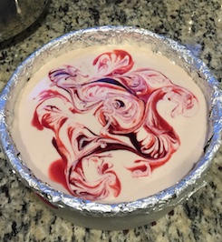

This recipe is the starting point for all my cheesecake recipes,
before adding flavorings or toppings.
Pumpkin Pie Chai Masala Caramel Swirl
Cheesecake
A fresh take on pumpkin pie, with a spiced Chai infused caramel
swirl and no whipped cream necessary.
A decadent dark chocolate cheesecake with ganache topping and a
touch of Bailey's to make it merrier.
Poached Pear and Mulled Wine on Vanilla Cheesecake
A spiced mulled wine sauce and poached pear slices top this festive
cheesecake with holiday spirits.
Maple and Apple Butter Cheesecake
Maple syrup flavors this cheesecake, which is complemented by the
layer of spiced apple butter atop the crust.